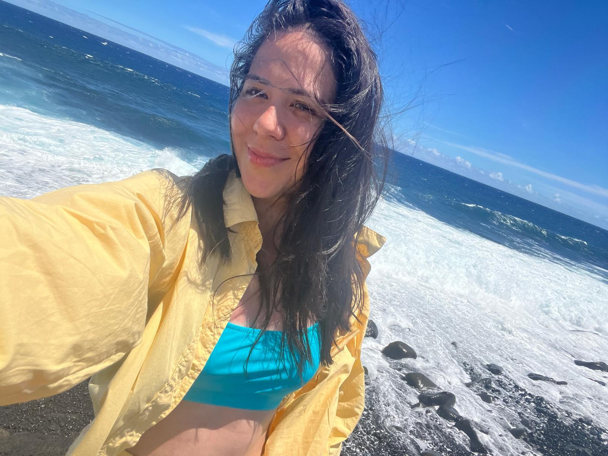
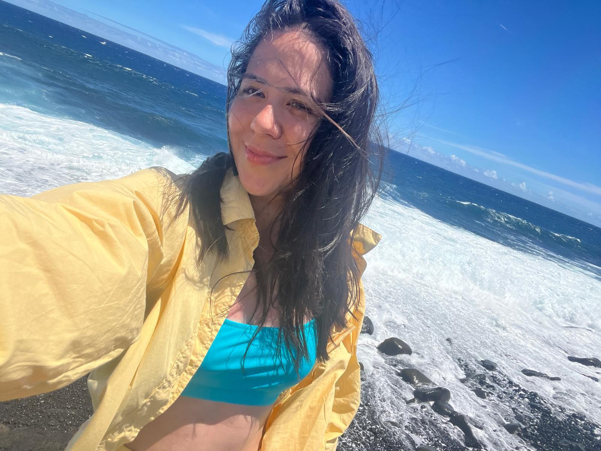

You know how people love to brag about their awesome vacations — sharing all the cool places they’ve been and what made one trip so special? My experience is a bit different — I haven’t traveled much.
When I was a kid, a vacation meant spending the summer at my grandparents’ house. Don’t get me wrong, I really enjoyed being there, but I always thought that was just how vacations were meant to be — a long, lazy summer at Grandma’s. Looking back, I realize those trips weren’t really my vacation at all; they were more like a bonus break for my parents, who got three whole months without me and my older brother. What a dream for them! Haha.


 
